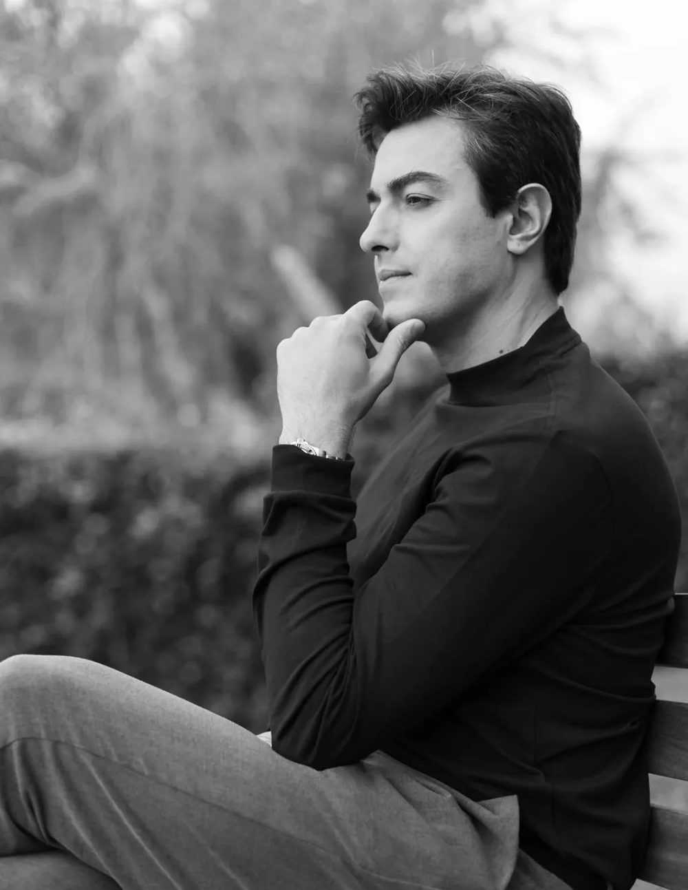
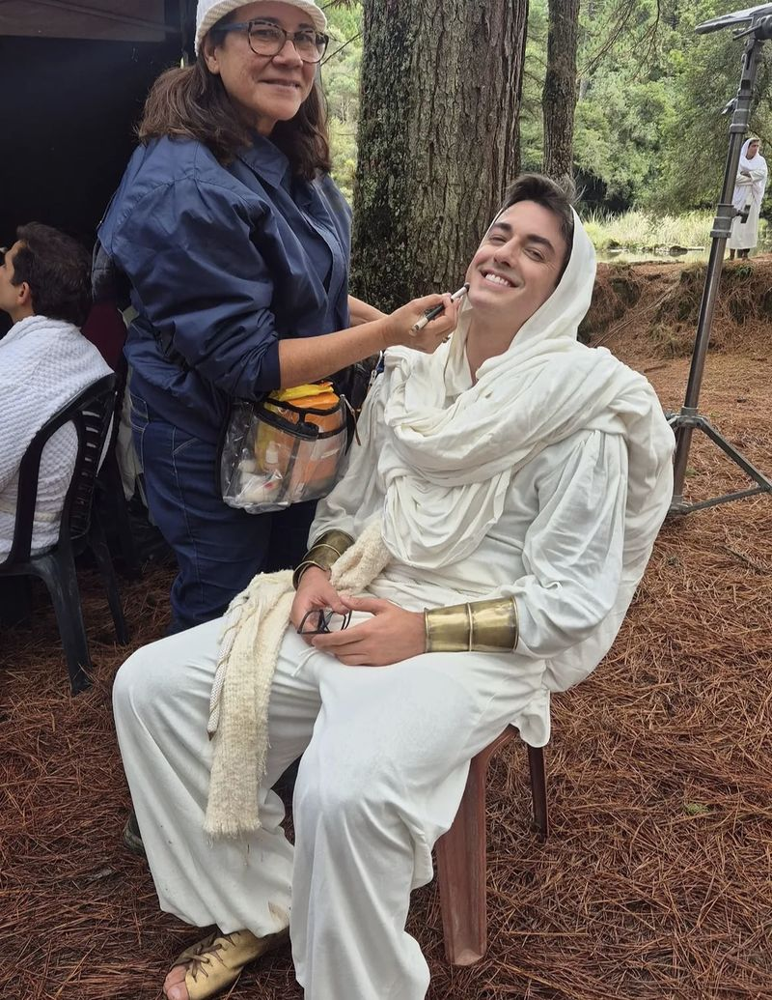
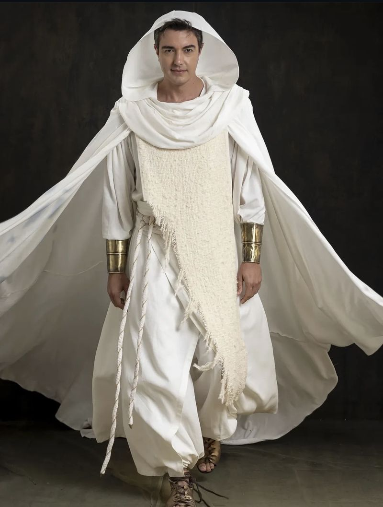
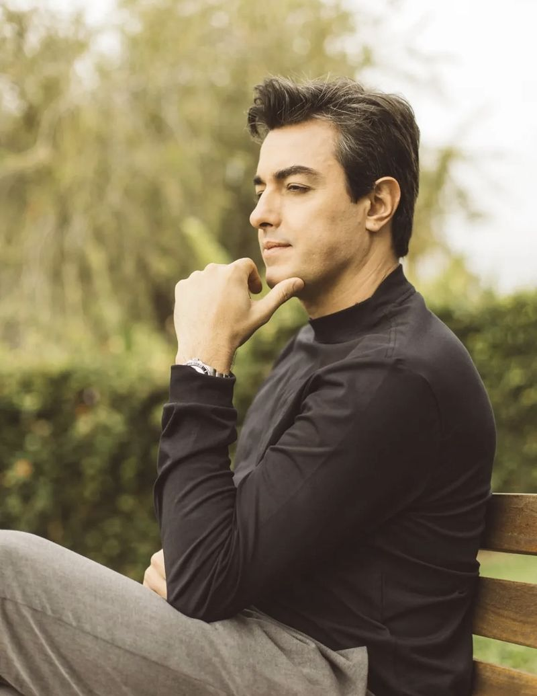

Comerciais
Filmes para TV, cinema e digital com atuação de quem vive o set há mais de 15 anos.
Cena 01 · Sobre
Nascido em Extrema (MG), Danillo Franccesco sobe ao palco desde criança e hoje transita entre São Paulo e Rio de Janeiro, na frente e atrás das câmeras.
No teatro, esteve em Além da Vida, espetáculo baseado em obras psicografadas por Chico Xavier que percorreu o Brasil e passou de um milhão de espectadores. Na TV, viveu o vilão Flito em Patrulha Salvadora (SBT), MC Rod dos Piseiros em Sintonia (Netflix), Festo em Paulo, o Apóstolo e o Filho de Deus em A Vida de Jó (Record).
No cinema, interpretou Eduardo, marido de Celly Campello, em Um Broto Legal. Como diretor e produtor, assina o longa Não Peça Desculpas, presente em festivais no Brasil e no exterior, além de documentários e curtas pela MED Produções. Soma mais de 60 publicidades para TV e internet e ministra workshops de cinema desde 2013.

Cena 02 · Filmografia
Cena 03 · Direção e produção
Um drama familiar sobre abuso e violência doméstica, filmado em Extrema (MG) com elenco e equipe quase inteiramente da cidade.
Escrito para provocar reflexão sobre a violência contra a mulher no Brasil, o longa de 80 minutos marcou a estreia de Danillo Franccesco na direção de longas e foi premiado e indicado em festivais nacionais e internacionais, inclusive a Melhor Filme.
Cena 04 · Em movimento
Cena 05 · Marcas & publicidade
Um rosto de Netflix, Record e cinema que também dirige e produz. São mais de 60 publicidades para TV e internet no currículo. Danillo pode estrelar a sua campanha ou entregar a peça completa, do roteiro à finalização, pela MED Produções.
Filmes para TV, cinema e digital com atuação de quem vive o set há mais de 15 anos.
Reels, Stories e posts com linguagem cinematográfica para a audiência de @danillofranccesco.
Parcerias de longo prazo para marcas de esporte, bem-estar, moda e lifestyle.
Presença, apresentação e ativações em lançamentos, feiras e festivais.
Filmes para empresas, prefeituras e órgãos públicos, com direção e produção próprias.
Campanhas de conscientização, na linha de Não Peça Desculpas, sobre violência doméstica.
Vamos colocar a sua marca em cena?
Cena 07 · Bastidores
@danillofranccesco


Cena 08 · Para produtores de elenco
Créditos finais
Fim.
Cena 06 · Formação & impacto social
Cinema que chega a todos
Além de atuar e dirigir, Danillo forma novos artistas e leva o cinema a quem nunca esteve diante de uma tela grande, com projetos em Extrema e em cidades do interior de Minas Gerais e São Paulo.
Mostras de cinema a céu aberto
Sessões itinerantes de filmes e documentários nacionais em bairros afastados do centro, para centenas de pessoas que nunca tinham ido ao cinema.
Workshops de cinema
Desde 2013, em São Paulo, Extrema, Vargem, Pedra Bela e outras cidades: da ideia à finalização, passando por atuação, direção, fotografia, luz e arte.
Produção cultural em Minas
Filmes rodados com elenco e equipe locais, temporadas de teatro e espetáculos de humor e infantis trazidos para Extrema.
Formação
Atuação e direção pelo Latin American Film Institute, em parceria com a New York Film Academy (2012). Cursos com Fátima Toledo, Wolf Maya, Instituto Stanislavsky e IAS Atores, e workshops internacionais com Tristan Aronovich, David Bridel, Eric Sherman e Marjo-Riikka Mäkelä.
Um projeto para a sua cidade, escola ou secretaria?